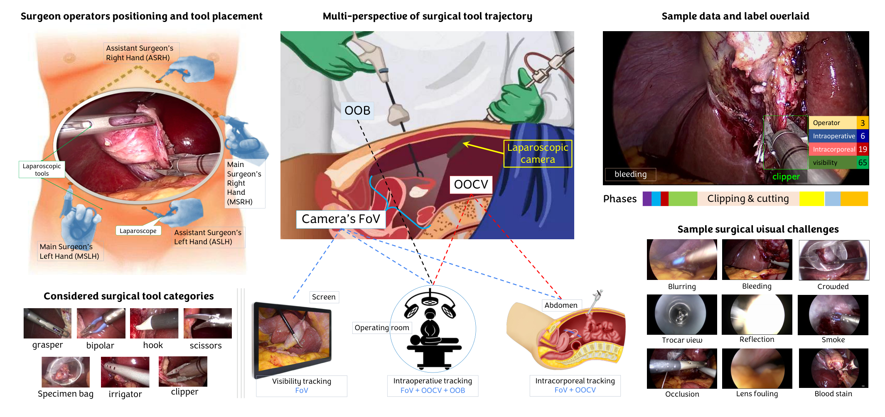
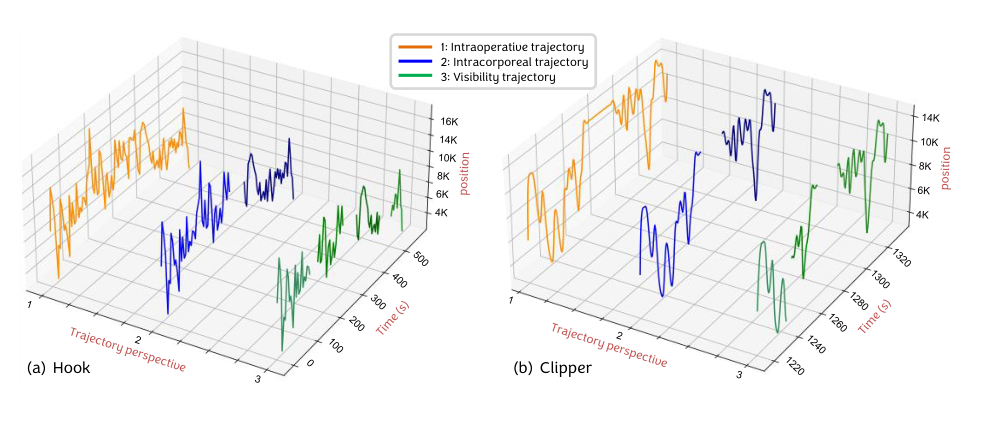
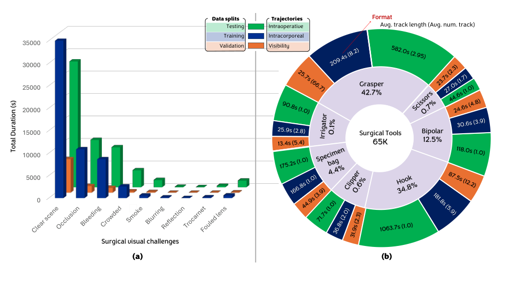
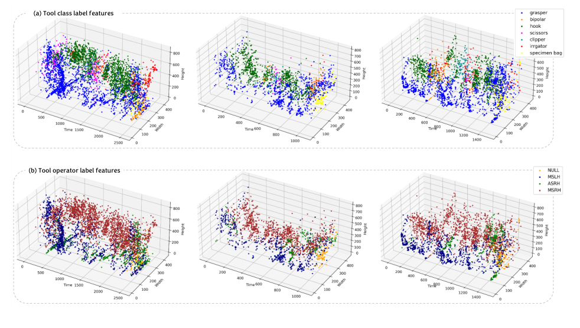
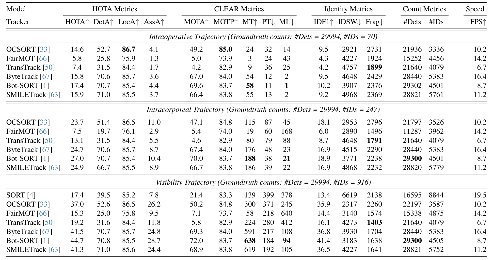
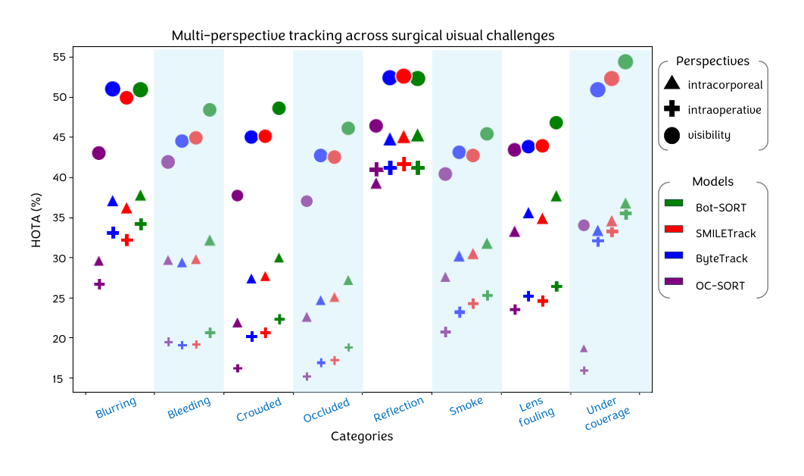

图文解读
1背景与动机
手术器械跟踪的难点不在“找到器械”，而在“认出它还是不是刚才那一把”。 器械会被遮挡、移出画面、从套管口拔出体外，再插回来；同类器械还可能同时出现。
已有手术跟踪数据集只采用一种轨迹定义：要么器械离开画面轨迹就结束，要么整台手术一个身份。临床用途却各需要不同的时间尺度：统计器械使用要跨越拔出再插入，评估操作步骤要知道画面外的器械是否还在体内，实时反馈只需要画面内的轨迹。
在通用数据集上预训练的模型，在出血、烟雾、反光等手术画面里也表现不佳。作者认为需要一个专门的、带上下文标签的手术跟踪数据集。
2核心观点速览
这篇论文的核心贡献是轨迹定义，而不是模型。 同一个框带三个 ID，区别只在“轨迹何时结束”。
- 数据： 20 台完整手术，1 FPS 标注，35000 帧、65200 个框。
- 标签： 7 类器械、4 类操作者、8 类视觉挑战、7 个手术阶段，加三套轨迹 ID。
- 结果： 最好的
Bot-SORT在可见性、腔内、术中视角的HOTA分别是 44.7%、27.0%、17.4%。 - 边界： 跟踪器所用检测器和训练配置论文未说明；正文有三处描述与表格矛盾。
接下来先看三种定义，因为后面所有分数差异都由它决定。
3三种轨迹视角

| 视角 | 轨迹何时结束 | 真值 ID 数（测试集） |
|---|---|---|
| 可见性 | 器械离开画面，两秒内的短暂消失仍算同一条 | 916 |
| 腔内 | 器械经套管口离开体内，即使不在画面中 | 247 |
| 术中 | 器械在本台手术中最后一次出现 | 70 |
真值 ID 数从 916 降到 70，意味着定义越长，跟踪器越需要在器械不可见时保持身份。 腔内轨迹最难标注：器械常在画面外退出，论文规定当同一套管口进入另一件器械，或原器械松开夹持的组织时，推断它已出体。

定义清楚之后，问题变成：这三套 ID 是怎么标出来的，标得可信吗？
4数据怎么来、怎么标
原始视频来自 Cholec80 和 CholecT50，在斯特拉斯堡大学医院录制。作者挑选长而清晰、覆盖全部阶段的手术，从 25 FPS 下采样到 1 FPS，并匿名化体外画面。
标注分四步：四名研究者在器械尖端画框并按套管口判断操作者；同时标注阶段、画面外与体外状态、进出事件和视觉挑战；再结合类别、位置、操作者和交互标签分配三套 ID，不确定处回到 25 FPS 复查；最后做一致性评估和外科医生仲裁。整个过程持续两年。
| 验证 | 框重叠（Jaccard） | 器械类别一致性 | 操作者一致性 |
|---|---|---|---|
| 组内 | 99.4% | 94.6% | 94.0% |
| 组间（20 个样本） | 91.8% | 95.2% | 92.7% |
外科医生仲裁了 758 个不确定样本，修正 133 个。这些一致性只覆盖框和类别，最关键的轨迹 ID 一致性论文未说明。
5数据长什么样

类别极不平衡： 抓钳 42.7%、电钩 34.8%，两者合计 77.5%；剪刀、施夹器、冲洗器都不到 1%。遮挡是最常见的视觉挑战，累计可达 23,000 秒。抓钳平均每台在体内 27 分 39 秒、重新插入 8.4 次，正是长时重识别问题的来源。

论文据此指出，不同类别的轨迹大多交织在一起，但操作者与位置强相关，因为套管口位置固定。这一点后面会成为改进方向。
6和已有数据集比
| 数据集 | 已有视角 | 缺什么 |
|---|---|---|
| 四个检测数据集 | 无轨迹 | 没有身份标签 |
EndoVis'15、RMIT | 可见性 | 没有腔内、术中视角 |
| Fathollahi 等 | 术中 | 没有可见性、腔内视角 |
| 以上全部 | — | 没有操作者、视觉挑战、阶段标签 |
CholecTrack20 是表中唯一三种视角和三类上下文属性都具备的数据集，帧数 35000 也是表中最多的。
7检测：现成方法已经不弱
13 个检测器用 pycocotools 评测。YOLOv7 到 YOLOv10 的综合平均精度都在 55.6 到 56.5 之间，比其余模型高十几个点。电钩最容易检测，冲洗器和标本袋最难。
正文说 YOLOv7 以 56.1 最高、全部类别领先，但表 2 中 YOLOv9 是 56.5。 电钩、冲洗器、标本袋三类的最高分也分别属于 YOLOv8、YOLOv10、YOLOv9。引用排名应以表格为准。
检测这层表现尚可，那么跟踪的低分从哪里来？
8跟踪：分数低在关联

| 跟踪器 | 术中 | 腔内 | 可见性 |
|---|---|---|---|
FairMOT | 5.8 | 7.5 | 15.3 |
OCSORT | 14.6 | 23.7 | 37.0 |
ByteTrack | 15.8 | 24.7 | 41.5 |
SMILETrack | 15.9 | 24.9 | 41.3 |
Bot-SORT | 17.4 | 27.0 | 44.7 |
同一跟踪器在三个视角下检测分几乎不变，Bot-SORT 都在 70.7 到 70.8；关联分却从 28.7 跌到 10.4 和 4.4。 三个视角共用同一组检测，差距来自身份关联。
术中视角真值只有 70 个 ID，Bot-SORT 却预测了 4501 个，说明长时重识别基本失效。
正文说腔内最难、术中居中，与表 3 相反：每个跟踪器的术中分数都低于腔内。 从定义看也合理：术中要求器械拔出再插入后接上原 ID，对外观相同的同类器械几乎只能靠上下文判断。

按视觉挑战拆分时，跟踪在模糊、反光、覆盖不足下较好，检测却恰好在这几类下最差。论文未解释这一矛盾，所以这部分只能当作描述。
9结果没证明什么
同一跟踪器三视角的检测数、ID 数和速度几乎相同，例如 TransTrack 都是 21640 个检测、4079 个 ID。我的推断是作者用同一份输出对照了三套真值，没有针对视角调整方法。 所以“低于 45%”只适用于直接套用通用跟踪器的情形。
表 3 标题写“@ 25 FPS”，而标注是 1 FPS，真值检测数 29994 与 1 FPS 的测试集规模相符。评测帧率和真值扩展方式论文未说明。
10复现要注意什么
- 汇报时写明视角，三个视角的数字不能混比，也不要取平均。
- 检测用
pycocotools，不要用ultralytics自带评测。 - 跟踪评测走
TrackEval，确认作者的合并请求是否已合入。 - 按视频划分，不要按帧随机划分；各划分具体包含哪些视频论文未说明，需查项目页。
- 跟踪器的检测器、训练配置论文未说明，复现表 3 需查代码。